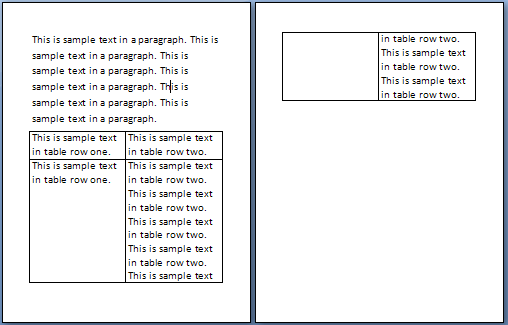
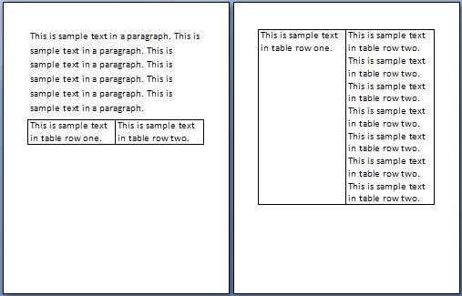

[Table of Contents] [docx version]
WordprocessingML Reference Material - Table of Contents
cantSplit (Table Row Cannot Break Across Pages)
This element specifies whether the contents within the current cell shall be rendered on a single page. When displaying the contents of a table cell (such as the table cells in this specification), it is possible that a page break would fall within the contents of a table cell, causing the contents of that cell to be displayed across two different pages. If this property is set, then all contents of a table row shall be rendered on the same page by moving the start of the current row to the start of a new page if necessary. If the contents of this table row cannot fit on a single page, then this row shall start on a new page and flow onto multiple pages as necessary.
If this element is not present, the default behavior is dictated by the setting in the associated table style. If this property is not specified in the style hierarchy, then this table row shall be allowed to split across multiple pages.
[Example: Consider the following content displayed on two different pages of a WordprocessingML document:

When this content is displayed, the contents of the 2nd table row in this document are displayed across two different pages. If the contents of this row are to be displayed on one page, then this requirement would be specified as follows:
<w:tr>
<w:trPr>
…
<w:cantSplit />
</w:trPr>
…
</w:tr>
The presence of the cantSplit element specifies that the table row shall not be broken across multiple pages, therefore the second table row starts on a new page:

This setting therefore ensures that the content will always be displayed on a single page (if it fits on one page). end example]
|
Parent Elements |
|
trPr (§2.7.5.10); trPr (§2.7.5.11); trPr (§2.4.78); trPr (§2.4.79) |
|
Attributes |
Description |
|
val (On/Off Value) |
Specifies a binary value for the property defined by the parent XML element.
A value of on, 1, or true specifies that the property shall be explicitly applied. This is the default value for this attribute, and is implied when the parent element is present, but this attribute is omitted.
A value of off, 0, or false specifies that the property shall be explicitly turned off.
[Example: For example, consider the following on/off property:
<w:… w:val="off"/>
The val attribute explicitly declares that the property is turned off. end example]
The possible values for this attribute are defined by the ST_OnOff simple type (§2.18.67). |
The following XML Schema fragment defines the contents of this element:
<complexType name="CT_OnOff">
<attribute name="val" type="ST_OnOff"/>
</complexType>